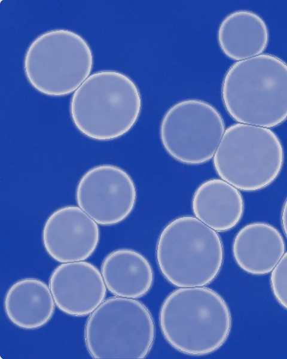
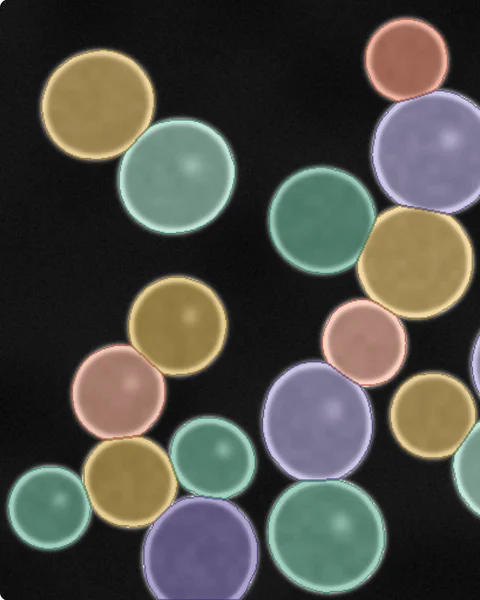
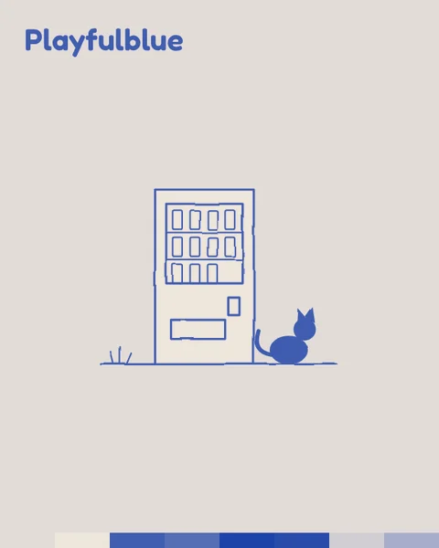
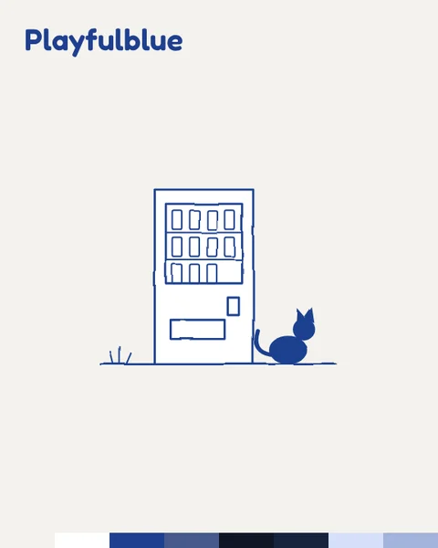

- sebastian.vonhaaren@gmail.com
- GöttingenDeutschland
KI in der Praxis
-
2026Forschungsdemo
Vibe Coding, Interaktion, Erscheinungsbild
µSAM²-Klickdemo
- Eine Browser-Demo, die zeigt, wie einfach das Annotieren von Zellen mit µSAM² ist: Zelle anklicken, Umriss bekommen. Das echte Modell steckt nicht dahinter, Bilder und Masken sind simuliert. Mit KI in eine einzige Datei gevibecodet, im Erscheinungsbild, das ich für das Projekt gestaltet habe.


-
2026laufend
Designsprachen für KI
Design-Skills · Claude
- Meine visuellen Stile, als Skills für Claude aufgeschrieben, damit sich die KI jedes Mal an Farben, Schriften und Figuren hält.


-
2023zwei Tage
KI erklären, Konzept, Erscheinungsbild
KI & Data Science Entdecken · Uni Göttingen
- Eine interaktive Ausstellung, die KI für ein breites Publikum greifbar gemacht hat: Experimente zum Ausprobieren, Gespräche mit Forschenden und Texte, denen alle folgen konnten. Ich habe Konzept, Organisation und Erscheinungsbild entwickelt, ein modulares Icon-System, das KI-Begriffe in verspielte Formen übersetzt.


Arbeiten
-
2025Märzausgabe
Coverillustration
Nature Methods · CIDAS
- Coverillustration für die Märzausgabe 2025 von Nature Methods zur Veröffentlichung „Segment Anything for Microscopy“ von Archit et al. Subzelluläre Strukturen in vereinfachten Formen, überlagert von Farbmasken, die zeigen, wie gut die Methode sie segmentiert.

-
20252023 – 2025
Cover-Artwork
Miles of Hope · auf Bandcamp ↗
- Cover-Artwork für die Single Shark Bait (2023) und die EP On Loss (2025) von Miles of Hope, einer Band aus Göttingen, in der ich spiele.

-
2023erstes Buch
Autor, Editorial Design, Satz
Planto · Selbstverlag
- Planto – Atlas der Gemüsekulturen, ein Praxisbuch über essbare Pflanzen für Hobbygärtner, das ich selbst geschrieben, gestaltet, gesetzt und verlegt habe.


-
2021Katalog
Fotografie, Recherche, Editorial Design
Atlas des Tabatiere
- Ein Katalog der bemalten Tabakdosen, die ein Architekt neben seinem Kamin an die Wand genagelt hat. Ich habe jede Dose fotografiert und freigestellt und den Hintergrund jedes Motivs recherchiert.


Über mich
Zum Design bin ich auf Umwegen gekommen, und ich nehme sie immer noch gern.
Was mich antreibt
Anfänge. Ich liebe den Moment, bevor etwas existiert, wenn ich grenzenlos denken und eine Weile glauben kann, dass alles möglich ist. Dinge anfangen, sie aufbauen, ganz zurück zu den Grundlagen gehen. Und was ich auch anfange, öffnet ein Fenster zu etwas, das ich noch nicht kannte. Gelernt wird also beim Machen.
Warum ich es einfach halte
Die Liebe zu Anfängen hat eine Kehrseite: Ich brauche auch feste Strukturen. Grenzen im Denken halten mich in der Spur. Ich habe ADHS, und seit meiner Kindheit ist mein Kopf eine ständige Flut aus Eindrücken, Ideen und Impulsen. Zwischen dem Willen zur Freiheit und dem Bedürfnis nach einem Rahmen zu leben, ist meine tägliche Herausforderung. Gestaltung ist mein Weg, darin Ordnung zu schaffen. Reduktion ist für mich deshalb nicht nur eine ästhetische Entscheidung, sondern eine Notwendigkeit, und die Klarheit, die sie mir gibt, möchte ich auch den Menschen geben, die meine Arbeit sehen.
Wie ich hierher kam
Lange bin ich dem Weg gefolgt, der sich als logischer nächster Schritt anbot. Ich habe eine Ausbildung zum Bürokaufmann gemacht, weil man das nach der Handelsschule eben so macht. Irgendwann habe ich verstanden, dass ein Arbeitsleben aus rein verwaltenden Aufgaben mein Denken klein hielt, an einem Ort mit wenig Raum für Ideen oder Veränderung. Also habe ich stattdessen mich verändert und bin als Erster in meinem ganzen Stammbaum an die Uni gegangen.
Eine völlig neue Welt tat sich auf, in der ein Gedanke einfach Inspiration sein darf und nicht sofort zur Handlung führen muss. Mich darin zurechtzufinden, plötzlich Akteur und nicht mehr nur Reakteur, war alles andere als leicht. Also habe ich ausprobiert und dabei gemerkt, was meine Gedanken ordnet: minimalistische Ästhetik, Verstehen durch Darstellung. Da ist diese Leidenschaft für Gestaltung entstanden.
Dann habe ich eine Stelle im Data-Science-Umfeld angenommen, und dort geht es um dasselbe, womit mein Kopf jeden Tag zu tun hat: weit mehr Information, als irgendjemand auf einmal aufnehmen kann. Data Science sucht darin die Muster, und Gestaltung entscheidet, wie diese Muster für Menschen sichtbar und verständlich werden. In diesem Raum dazwischen arbeite ich, und dort entstehen Projekte wie das Nature-Methods-Cover oder die Ausstellung über KI und Data Science.
Wie ich denke
Prozess ist Lernen, und das reicht für mich weit über jedes Projekt hinaus. Ich lebe hyperflexibel: Ich erlaube mir, mitten im Tun zu lernen, und gehe immer davon aus, dass ich weiß, dass ich nichts weiß (ich liebe Sokrates). Nichtwissen ist der Zustand, in dem ich am meisten bemerke, also sehe ich keinen Grund, ihn zu verlassen, bevor ich anfange. Jedes Thema, in das ich einsteige, öffnet ein Fenster zu etwas, das ich noch nicht kannte, und jedes Gespräch unterwegs darf meinen Blick verschieben, manchmal um ein paar Grad, manchmal komplett. Ich ändere lieber spät den Kurs, als eine Richtung zu verteidigen, an die ich nicht mehr glaube.
Das kann sich für alle unbequem anfühlen, die ein klares Bild von richtig und falsch brauchen. Wer sich aber erlaubt, richtig und falsch als Graustufen-Regenbogen zu sehen, findet in mir Reflexion als Just-in-time-Produktion: Fragen, die in dem Moment gestellt werden, in dem sie wichtig sind, und Antworten, die offen bleiben für die nächste Frage.
Klingt banal für dich? Dann werden wir vielleicht Freunde!
Nach Feierabend
Musik in mehreren Bands, Fotografieren, Töpfern lernen. Musik, Fotografie und Illustration beeinflussen sich gegenseitig: Eine Idee, die in einem Medium beginnt, landet oft in einem anderen. Ich sehe Gestaltung als Dialog, nicht als geschlossenes System. Meine aktuellen Kaninchenbauten stehen gleich darunter.
Aktuelle Kaninchenbauten
- Töpfern
- Kaffee
- Wandern
- Webdesign
- Einrichten
- Zeug loswerden
Kontakt
Werdegang
- Kommunikation und ProjektmanagementAktuelle Stelle, 50 % · L3S Research Center, KI-Forschung, Hannover
- MediengestaltungAktuelle Stelle, 50 % · CIDAS, Data Science und KI, Universität Göttingen
- GrafikdesignAutodidaktisch
- BetriebswirtschaftslehreStudium · Schwerpunkt Konsumentenverhalten
- BürokaufmannAusbildung
Kenntnisse
- KI-ToolsClaude (Projects, Skills, Claude Code) · ChatGPT · Gemini
- Prompting und effektives Vibe Coding
- Editorial Design, Satz
- Erscheinungsbild, Illustration
- Audiobearbeitung
- Adobe CC · HTML/CSS
- SprachenDeutsch (Muttersprache) · Englisch (fließend) · Russisch (Grundkenntnisse)
Nebenbei
- MusikprojekteMiles of Hope, emo · Skyglow, post-rock
- TöpfernNoch am Lernen
Musik
-
2025Emo
On LossMiles of Hope
Daniel Müller, Dennis Thiele, Falk Nagel, Sebastian von HaarenArtwork von Sebastian von Haaren
-
2025Emo

EchoesMiles of Hopeauf The Emo Diaries, Chapter 13 · Deep Elm Records
Daniel Müller, Dennis Thiele, Falk Nagel, Sebastian von Haaren
-
2023Emo

Shark BaitMiles of Hope
Daniel Müller, Dennis Thiele, Falk Nagel, Sebastian von HaarenArtwork von Sebastian von Haaren
-
2022Alternative metal

Torch | Eye Of The StormFar From Dreaming
Sascha, Tiemo, Lars, Daniel, Sebastian
-
2022Post-rock

SkyglowSkyglow
Wilke, Falk, Kilian, Sebastian